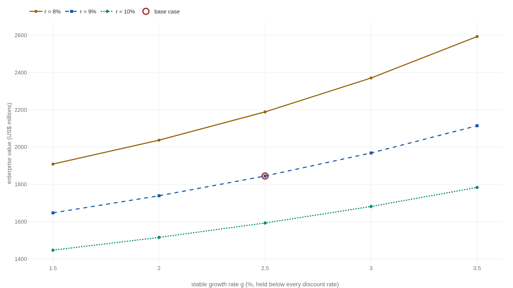

Three-quarters of a discounted-cash-flow value comes from after the forecast ends
That terminal chunk is also the shakiest input, so nudging the growth rate a single point swings the whole valuation fifteen percent.
Why this matters
Every price paid for a share is, whether the buyer says so or not, a bet on the cash the business will produce and the return the buyer wants for waiting. A discounted cash flow makes that bet explicit. This lesson assembles one from parts the course built: the free cash flow a firm throws off, the cost of capital that discounts it, and the present-value arithmetic that collapses future cash into one number. By the end you will be able to value a whole business as the present value of its cash. You will split that value into the years you can forecast and the terminal value you cannot, and see how much of the answer rests on one assumption. The aim is not to trust the number. It is to know which guess the number is made of.
- 01
- Apple's profit rose while its free cash flow fell: the owner cash a discounted cash flow discounts, and how it is built.
- 02
- A chipmaker's cost of capital runs more than double a utility's: the rate the future cash is discounted at.
- 03
- A dollar next year is worth 95 cents today: how a stream of future cash collapses into one value today.
A whole business, priced as one stream of cash
The earlier lessons built the parts one at a time. Free cash flow to the firm is the cash a business produces for all its investors after it pays to keep running. The cost of capital is the return those investors could earn elsewhere on money of the same risk. A discounted cash flow does one thing with those two parts. It treats a company as a claim on the cash it will produce. Then it prices that claim the way the present-value lesson priced any future stream: each year's cash divided by the return you gave up while you waited, then summed.12
One fact makes the sum honest work rather than a formula. A business does not stop after five years, and no one can forecast its cash forever. So a discounted cash flow splits the future in two: an explicit forecast for a handful of years, and a single terminal value that stands in for every year after.1
- FCFF_tfree cash flow to the firm in year t, the owner cash from the free-cash-flow lesson.
- rthe cost of capital, the blended hurdle from the cost-of-capital lesson.
- TV_nthe terminal value: every year past the forecast horizon n, folded into one number.
To see where the value comes from, take a deliberately simple firm, invented for this lesson and not a real company. It produces $100 million of free cash flow to the firm next year. That cash grows 8% a year through year five, its cost of capital is 9%, and after year five it settles into 2.5% growth forever. Every figure below is arithmetic on those illustrative inputs.
Most of the price is a bet on the years you never forecast
Discount the five explicit years at 9% and they are worth $450 million today. The terminal value uses the perpetuity form the present-value lesson closed on: next year's cash divided by the gap between the discount rate and the growth rate.1
Year five's cash of $136.05 million grows 2.5% to $139.45 million in year six. Over the gap between 9% and 2.5%, that year-six cash becomes a terminal value of $2,145 million at year five. Discounted back five years, it is worth $1,394 million today.
| Step | $M | What it is |
|---|---|---|
| Explicit | 450 | The five forecast years of cash, discounted to today. |
| Terminal | 2 145 | Year six's cash capped as a perpetuity, stated at year five. |
| PV terminal | 1 394 | That terminal value discounted back five years. |
| Enterprise value | 1 845 | The whole operating business: 450 + 1 394. |
| Terminal share | 75.6% | 1 394 of the 1 845 is the terminal value. |
Three-quarters of the answer is a number for the years after the forecast ends.
That share is not a quirk of these inputs. Michael Mauboussin and Dan Callahan, valuing going concerns at Morgan Stanley, put the continuing value at 70 to 80 percent of corporate value in a typical discounted cash flow.3 Damodaran's own published valuation of Tube Investments, a real two-stage model, puts about two-thirds of enterprise value in the terminal term.4
There are two ways to set that terminal value, and the choice moves it more than any rounding in the forecast. The perpetuity form above grows the last year's cash forever at a stable rate. The other common form multiplies a year-five earnings figure by a ratio drawn from what similar companies trade for today. Give the illustrative firm $200 million of year-five operating earnings and an 8-times peer multiple. Its terminal value is then $1,600 million against the perpetuity's $2,145 million, a quarter of the terminal value gone on the choice of method alone. Damodaran calls the peer-multiple version a "Trojan Horse DCF." It smuggles today's market pricing into a model that claims to value the firm from its own cash.5 Analysts reach for it anyway. Mauboussin reports the earnings-based exit multiple is the common way to set continuing value in practice.3 The two forms answer different questions, and only the perpetuity keeps the model's promise to price the firm on its own cash rather than on the crowd's mood.
Move one number and read the new answer
The valuation has one honest weak point, and it is the same terminal value that holds most of the weight. Two inputs set it: the discount rate r and the stable growth rate g. Change either by a single point and enterprise value moves.
Hold g at 2.5% and lift the discount rate from 9% to 10%: enterprise value falls from $1,845 million to $1,593 million, down 13.7%. Put r back at 9% and lift stable growth from 2.5% to 3.5%: enterprise value rises to $2,114 million, up 14.6%. One point, on one of two inputs, moves the answer about a seventh in either direction.

The lines fan out because the terminal value rests on the difference between r and g, and that difference is small. At r = 9% and g = 2.5% the gap is 6.5 points. Widen g toward r and the denominator shrinks toward zero, so the value climbs toward infinity. Damodaran states the limit as arithmetic, not economics: as g approaches r the terminal value runs to infinity, and if g exceeds r it turns negative.5 That is why the growth rate needs a ceiling. He caps it at the risk-free rate, noting that from 1954 to 2015 the ten-year Treasury averaged 5.93% against nominal economic growth of 6.67%.5
Within that ceiling the choice of g is judgment, and it is where a discounted cash flow's argument is really conducted. One camp of valuation purists holds that a mature firm earns no excess return and should therefore grow at zero. Damodaran answers that excess returns outlast high growth, so a small positive rate is defensible.5 The dispute is not academic. Across the illustrative firm's grid, moving g from 1.5% to 3.5% swings enterprise value from $1,647 million to $2,114 million. Through all of it the terminal value's share of the answer stays between about 70 and 82 percent. The number doing most of the work is the number no one can look up.
Is the tool broken, or the hand?
A model whose answer swings a seventh on a one-point assumption invites a verdict, and the authorities split on where to aim it. Mauboussin argues the fault is in the hand: many discounted cash flows are done poorly, so the shortcomings speak "not about the approach but rather to how it is applied."3 Pablo Fernández aims at the tool, calling much of the standard apparatus unnecessary complication whose most common error is a mis-computed discount rate.6 Damodaran concedes the opening both describe: analysts often use the stable growth rate to bend a valuation toward the answer they already wanted.5
The arithmetic itself is not in dispute. Fernández, the harshest of the three, grants that valuing a company this way is at root the same procedure used to value a government bond.6 What all three accept is that the fragility is real and lives in the inputs, not the formula.
The weakness of a discounted cash flow is also its honesty. It cannot hand you what a business is worth, but it forces every assumption into the open and shows exactly which one is carrying the answer. A one-line multiple buries the same guesses. This model at least makes you write them down.3
The takeaway
A discounted cash flow values a business as the present value of the cash it will produce, discounted at its cost of capital. Most of that value, in the illustrative firm three-quarters of it, is the terminal value, the one number standing in for every year past the forecast. And that number is the shakiest: a single point of growth or discount rate moves the whole valuation by about a seventh. The two facts are one. The part of the answer you can least observe is also the largest and the most sensitive. So a discounted cash flow is not a machine that prints what a company is worth. It is a way to make your assumptions explicit and watch what each one does. Most of all it exposes the growth rate you can never look up and can only argue for.
- 01
- Aswath Damodaran, "Terminal Value: The Tail That Wags the Dog?": the fuller case on the terminal-value trap and why growth needs a ceiling.
- 02
- Michael Mauboussin and Dan Callahan, "Everything Is a DCF Model": the argument that every valuation, multiples included, is a discounted cash flow in disguise.
Sources
- Aswath Damodaran (NYU Stern) · Closure in Valuation: Estimating Terminal Value
- CFA Institute · Free Cash Flow Valuation
- Michael J. Mauboussin & Dan Callahan, Morgan Stanley Counterpoint Global · Everything Is a DCF Model
- Aswath Damodaran (NYU Stern) · The Free Cashflow to Firm Model
- Aswath Damodaran (NYU Stern) · Terminal Value: The Tail That Wags the Dog?
- Pablo Fernández (IESE Business School), WP-1062-E · Valuing Companies by Cash Flow Discounting